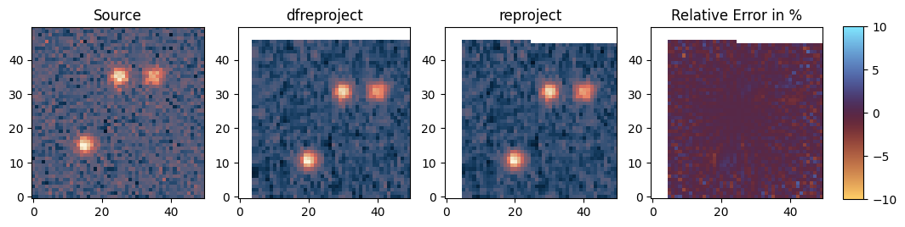
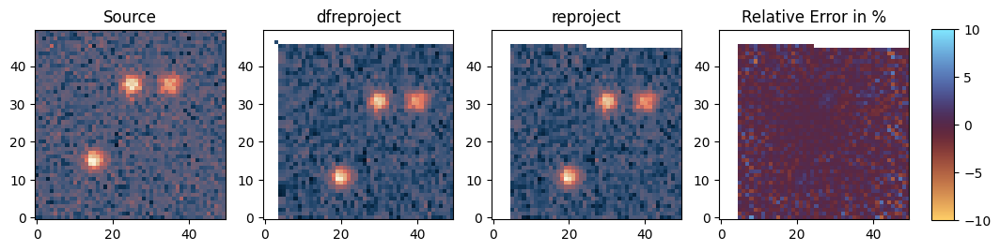

Comparison of interpolation methods¶
We compare the results of our interpolation method versus reproject to verify the results.
[2]:
from astropy.io import fits
from astropy.wcs import WCS
import time
from dfreproject import calculate_reprojection
from reproject import reproject_interp
from demo.create_test_data import create_test_fits_tiny
from matplotlib import pyplot as plt
import cmcrameri.cm as cmc
import numpy as np
Create data¶
We are going to create a sample dataset of three Gaussian sources with a subpixel (0.2 pixel) shift with the relevant WCS information.
[3]:
source_file, target_file = create_test_fits_tiny()
source_hdu = fits.open(source_file)[0]
target_hdu = fits.open(target_file)[0]
Run Reprojection¶
We are now going to run reprojection using our dfreproject package and the standard reproject package for comparison. Let’s compare the results using the three types of interpolation we have: ‘nearest-neighbor’, ‘bilinear’, and ‘bicubic’. Since the images are very small, the timing advantage isn’t seen in our implementation.
Nearest Neighbor¶
[4]:
start = time.time()
reprojected_source_torch = calculate_reprojection(source_hdu, WCS(target_hdu.header), shape_out=target_hdu.data.shape, order="nearest")
print(f"total time: {time.time()-start}")
total time: 0.5434434413909912
[5]:
start = time.time()
reprojected_source_reproj = reproject_interp(source_hdu, target_hdu.header,order='nearest-neighbor')[0]
#reprojected_source_reproj = reproject_interp(target_hdu, source_hdu.header,order='bicubic')[0]
print(f"total time: {time.time()-start}")
total time: 0.026688098907470703
[8]:
fig, axs = plt.subplots(1, 4, figsize=(12,6))
axs[0].imshow(source_hdu.data, origin='lower', cmap=cmc.lipari)
axs[0].set_title('Source')
im1 = axs[1].imshow(reprojected_source_torch, origin='lower', cmap=cmc.lipari)
axs[1].set_title("dfreproject")
im2 = axs[2].imshow(reprojected_source_reproj, origin='lower', cmap=cmc.lipari)
axs[2].set_title("reproject")
diff_result = 100*(reprojected_source_torch.astype(np.float32)- reprojected_source_reproj.astype(np.float32))/reprojected_source_reproj.astype(np.float32)
im3 = axs[3].imshow(diff_result, origin='lower', cmap=cmc.managua, vmin=-10, vmax=10)
axs[3].set_title("Relative Error in %")
cbar_ax = fig.add_axes([0.92, 0.325, 0.02, 0.34]) # [left, bottom, width, height]
fig.colorbar(im3, cax=cbar_ax)
plt.show()

As we can see the results are extremely similar. The differences are due to how the normalization is handled in our implementation versus reproject_interp.
Bilinear¶
[10]:
reprojected_source_torch = calculate_reprojection(source_hdu, WCS(target_hdu.header), shape_out=target_hdu.data.shape,
order="bilinear")
reprojected_source_reproj = reproject_interp(source_hdu, target_hdu.header,order='bilinear')[0]
fig, axs = plt.subplots(1, 4, figsize=(12,6))
axs[0].imshow(source_hdu.data, origin='lower', cmap=cmc.lipari)
axs[0].set_title('Source')
im1 = axs[1].imshow(reprojected_source_torch, origin='lower', cmap=cmc.lipari)
axs[1].set_title("dfreproject")
im2 = axs[2].imshow(reprojected_source_reproj, origin='lower', cmap=cmc.lipari)
axs[2].set_title("reproject")
diff_result = 100*(reprojected_source_torch.astype(np.float32)- reprojected_source_reproj.astype(np.float32))/reprojected_source_reproj.astype(np.float32)
im3 = axs[3].imshow(diff_result, origin='lower', cmap=cmc.managua, vmin=-10, vmax=10)
axs[3].set_title("Relative Error in %")
cbar_ax = fig.add_axes([0.92, 0.325, 0.02, 0.34]) # [left, bottom, width, height]
fig.colorbar(im3, cax=cbar_ax)
plt.show()

Bicubic¶
[11]:
reprojected_source_torch = calculate_reprojection(source_hdu, WCS(target_hdu.header), shape_out=target_hdu.data.shape,
order="bicubic")
reprojected_source_reproj = reproject_interp(source_hdu, target_hdu.header,order='bicubic')[0]
fig, axs = plt.subplots(1, 4, figsize=(12,6))
axs[0].imshow(source_hdu.data, origin='lower', cmap=cmc.lipari)
axs[0].set_title('Source')
im1 = axs[1].imshow(reprojected_source_torch, origin='lower', cmap=cmc.lipari)
axs[1].set_title("dfreproject")
im2 = axs[2].imshow(reprojected_source_reproj, origin='lower', cmap=cmc.lipari)
axs[2].set_title("reproject")
diff_result = 100*(reprojected_source_torch.astype(np.float32)- reprojected_source_reproj.astype(np.float32))/reprojected_source_reproj.astype(np.float32)
im3 = axs[3].imshow(diff_result, origin='lower', cmap=cmc.managua, vmin=-10, vmax=10)
axs[3].set_title("Relative Error in %")
cbar_ax = fig.add_axes([0.92, 0.325, 0.02, 0.34]) # [left, bottom, width, height]
fig.colorbar(im3, cax=cbar_ax)
plt.show()
